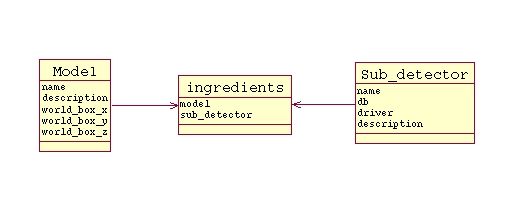
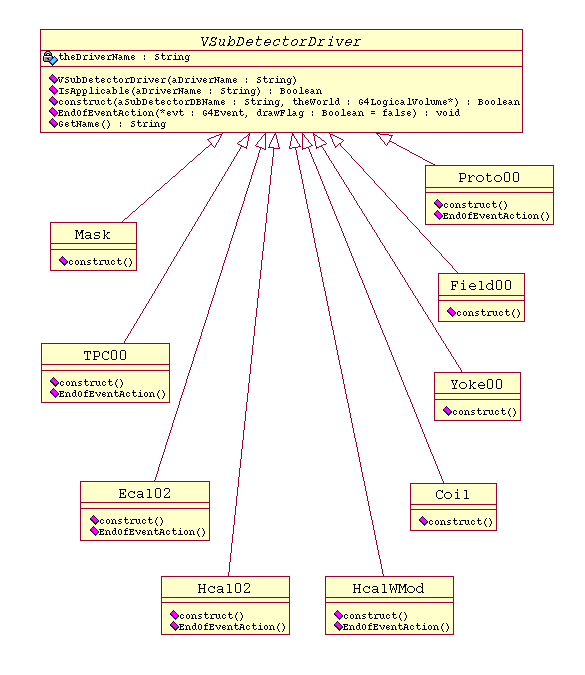

Considering that several releases for a given detector could be considered for studies, that even the calorimeter prototypes should be simulated with the same Physics and so on, the Mokka development environment is kept the most "free of constraints" as possible. Code re-use should also be considered, it means, simple geometry dimension changes should not ask for code development when possible. These guidelines let to adopt a data driven geometry model.
Concerning the data output issues, Mokka is compliant with a persistency abstraction schema which doesn't rely on any particular persistency tool (Tree, Objectivity, etc.). The actual persistency environment should be an user choice at run time, as it should be also an user choice to build a particular tool interface when compiling the Mokka library. It should be done via environment variables before launching the compilation.
Mokka provides always an embedded a simple persistency mode (called "native mode") with the following strategy:
As option you can build the Mokka/LCIO interface to save
data in lcio files.
In the present document just the minimal interface to plug a sub detector driver to the Mokka persistence is described along the text. Sub detector drivers correctly plugged to the Mokka have the collection hits dumped to files at the end of each event, if Mokka is running in persistent mode (see the "-o" or "-l" command line parameters).
We assume here that:
Mokka is strongly based on the Geant4 framework. This documentation assumes that you know enough about Geant4. If not, click here to get started and to access the last Geant4 release and documentation.
Mokka's detector data driven model is strongly based
on MySQL. This documentation assumes that you know enough about it. If
not, click here to get started and to
access all the last MySQL release and the documentation.
The Mokka LCIO interface is written on top of the
"LCIO, a persistency framework for future linear collider detector simulations"
implementation described here.
Moreover, the Mokka main() program sets up the RunManager
with some user action objects to :
If an initial macro file was specified with the line command option "-m", the file is executed with the Geant4 "/control/execute " thanks to the G4UImanager command interface.
Depending on the environment variables at compilation
time, the interactive user command session can be managed by:
People developing new detector modules to be simulated
by Mokka should be concerned only with the "how the detector should be
built" and the "begin and end of events" items above. Following we introduce
just a few words about how Mokka use some of other Geant4 basic classes.
Geant4 has only one physics parameter, the particles
production threshold, also called "cut in range" parameter. It's the cut
associated with the particle as a (recommended) production threshold of
secondary particles. For Mokka, the "cut in range" parameter defaults to
0.005 mm but it can be modified via the line command option "-c" when launching
the application. The choose value is setup before initializing the
physics processes in the Mokka main() program, thanks to the PhysicsList's
SetDefaultCutValue method.
The PrimaryGeneratorAction class, the Mokka's G4VuserPrimaryGeneratorAction
implementation, implements two kinds of primary generators for Mokka: particleGun
and PYTHIA. Both are strongly based on some the particleGun and PYTHIA Geant4
PrimaryGeneratorAction examples with the following extensions:
Primaries with ISTHEP(IHEP) <> 1 in the Pythia input file are accepted but ignored, as described in the Geant4 documentation:
"If the parent particle is an "intermediate" particle, which Geant4 does not have a corresponding G4ParticleDefinition, this parent particle is ignored and daughters are assumed to start from the vertex with which their parent is associated. For example, a Z boson is associated with a vertex and it has positive and negative muons as its daughters, these muons will start from that vertex. There are some kinds of particles which should fly some reasonable distances and, thus, should be simulated by Geant4, but you still want to follow the decay channel generated by an event generator. A typical case of these particles is B meson. Even for the case of a primary particle which has a corresponding G4ParticleDefinition, it can have daughter primary particles. Geant4 will trace the parent particle until it comes to decay, obeying multiple scattering, ionization loss, rotation with the magnetic field, etc. according to its particle type. When the parent comes to decay, instead of randomly choosing its decay channel, it follows the "pre-assigned" decay channel. To conserve the energy and the momentum of the parent, daughters will be Lorentz transformed according to their parent's frame. (from "Geant4 User's Guide For Application Developers - Toolkit Fundamentals")."
Mokka's detector data driven model is strongly based
on MySQL. Indeed it's not mandatory to keep the sub detector geometric parameters
in MySQL tables, detector module developers are strongly advised to do that.
We describe here only the global control variables
useful for detector module developers:
3) The Mokka Geometry data model
The geometry model to be simulated by Mokka is data driven at execution time (see the line parameter "-M"), thanks to the database "models". Thanks to this approach the user is be able to compose several detector models as sub detector subsets. Moreover, a same detector driver can be driven by several geometry database releases.

Mokka models databaseThis database is composed by three tables:
- Model: it keeps
- the model name (D08, TDR, etc.);
- the world box dimensions to keep in the detector;
- a detector description, for documentation.
- Sub-detector: it keeps
- the sub detector name (Ecal, Hcal, TPC, etc.);
- the MySQL database name describing the geometrical parameters for this sub detector (driver depending on);
- the Mokka driver able to build this sub detector;
- a sub detector description, for documentation.
- Ingredients: it's a relationship between a model and sub detectors
It's an user responsibility to compose coherent models avoiding sub detector overlaps.
4) The geometry drivers
Geometry drivers are piece of C++ code responsible to implement a sub detector as described by the Mokka Geometry data model above. It takes the form of a class with inherits from the VSubDetectorDriver Mokka's kernel abstract class. At execution time, all the geometry drivers Mokka needs to build a given detector model are invoked via their construct() method. The driver's name is a mandatory constructor parameter for the VSubDetectorDriver class. To examine a simple Mokka geometry sub detector driver code like the TPC01, written for the Tesla project, could help you to understand the following explanations.
All sub detector drivers have to inherit from the Mokka VSubDetectorDriver abstract class:4.1) The VSubDetectorDriver abstract class

The sub detector driver developers are concerned by the following methods of the VSubDetectorDriver abstract class:
- VSubDetectorDriver (const G4String &aDriverName,G4String aBaseFileName=""): it's the class constructor.
- aDriverName: the user HAS TO pass a driver name to identify the sub detector;
- aBaseFileName: optional, this parameter is used by the persistence sub system to identify the hit file or block name for hits of this sub detector when saving data in native mode.
- G4bool contruct(G4String DBName, G4LogicalVolume* theWorld): it's a pure virtual method to be overload. It's called only and only if the sub detector is part of the detector model being building. Parameters:
- G4String DBName: it's the MySQL database name attached to the sub detector name in the sub detector model table.
- G4LogicalVolume* theWorld): it's the logical world volume, where the sub detector logical volumes have to placed.
- void RegisterSensitiveDetector (VSensitiveDetector *aSensitiveDetector): this call enables the user to register user defined sensitive detector to the persistence implementations, to have the hits collections automatically saved on disk
BE CAREFUL: you have not to call directly the G4SDManager's AddNewDetector method to add your user defined sensitive detector objects. It's done directly by the VSubDetectorDriver's RegisterSensitiveDetector call.
The construct() method should returns "true" if the sub detector is built successfully, "false" otherwise.
CGA, the "Common Geometry Access" interface, makes the same geometry model available for the simulation, reconstruction and analysis. The Mokka singleton CGAGeometryManager class works as the Mokka G4VUserDetectorConstruction implementation. As any regular Geant4 application, when initializing, the RunManager object calls the CGAGeometryManager's construct() method to build the geometry to be simulated.4.2) The CGAGeometryManager class
The CGAGeometryManager's construct() method:
- defines some materials (see below)
- seeks the model database to find out the choose detector world parameters
- build the world volume
- for each sub detector associated to the choose detector in the ingredients table
- scans the sub detector table to get the geometry driver name
- if find, scans the geometry driver internal container to find the geometry driver and then calls its construct() method, passing the database driver name and the logical world volume pointer as parameters.
As said above, the CGAGeometryManager's construct() method defines several useful materials to be used by the geometry driver. These materials are CGAGeometryManager's class variables, so to get access you have to use the "CGAGeometryManager::" prefix.4.3) Materials
Some of the actual predefined materials are:
You are free to define new materials or mixtures. But for coherence proposes it's a good practice to use the already defined in the CGAGeometryManager class, or to ask to add new ones in this list when needed.
- CGAGeometryManager::W (Tungsten)
- CGAGeometryManager::Si (Silicium)
- CGAGeometryManager::Fe (Iron)
- CGAGeometryManager::Cu (Copper)
- CGAGeometryManager::Al (Aluminum)
- CGAGeometryManager::Ar (Argon)
- CGAGeometryManager::Air (Air)
- CGAGeometryManager::SiO2
- CGAGeometryManager::Epoxy
- CGAGeometryManager::G10
- CGAGeometryManager::Polystyrene
- CGAGeometryManager::Kapton
You are free to use all the Geant4 geometry shapes, volumes and placements. Be sure that your topmost logical volumes are placed directly into the logical world volume you got as parameter in the construct() method call. You are free also to define all the visual attributes for your volumes.4.4) Volumes
To be available, the geometry driver has to be created using the INSTANTIATE macro that is defined in "CGADefs.h". For example, to plug the geometry driver named "mydet" you have to include these two lines in the mydet.cc file:4.5) Plugging geometry drivers into CGAGeometryManager class
#include "CGADefs.h"
INSTANTIATE(mydet)
This way there is no need for the detector driver writer to touch other files than those defining the new driver. If the Mokka models database is up to date, you are read to compile and launch Mokka with your detector and your new driver to test it.
5) Sensitive Detectors
Sensitive detectors are too device dependents to be furnished by the Mokka kernel. So, if your detector driver is able to collect hits, it's your responsibility to define:Nevertheless, to complain with the persistence implementations:
- your hit class(es);
- your hits collection class(es) (see some samples);
- the sensitive detector class(es) you need.
- your user defined hit class HAS TO inherit from the abstract class VHits;
- your user defined sensitive detectors class HAS TO inherit from the abstract class VSensitiveDetector.
5.1) The VHits abstract class
To complain with the Mokka persistence implementations your user defined hit class has to inherit from the abstract class VHits. The VHits abstract class inherits itself from the G4VHit class, so you must not inherit directly your hit class from the G4VHit one.The sub detector driver developers are concerned with only by the following methods of the VHit abstract class:
To complain with the LCIO interface you have to implement also the method
- virtual void Draw( ) : called by the visualization to render the hit on the screen;
- virtual void Save (FILE *oFile): called by the native persistence implementation to write this hit on the file oFile (already opened, you have just to implement the "write" call);
- virtual G4bool Load (FILE *iFile): called by the native persistence implementation to reread the hit values from the file iFile (already opened, you have just to implement the "read" call).
virtual void Save(LCCollectionVec* ).Moreover, when compiling with the LCIO interface the VHit constructor asks for a LCCollectionType name:
VHit(std::string aLCCollectionType)
5.2) VHit concrete implementations available in Mokka
Mokka provides two generic VHit concrete implementations which we advice the users to use, if possible:
- CellHit, implements the calorimeter cell hits for calorimeter collections. Can be used with the different sensitive detectors attached to calorimeters sensitive volumes (Ecal, Hcal, prototypes...), for the barrel or for the endcaps as well. It keeps for each hit:
- the detector piece number. By convention for TESLA,
- Ecal end cap -Z
- Ecal barrel
- Ecal end cap +Z
- Hcal end cap -Z
- Hcal barrel
- Hcal end cap +Z
- the stave number, by convention for TESLA 1-8 for barrel, 1-4 for end caps;
- the module number in stave , by convention for TESLA 1-5 for barrel, 1 for end caps;
- the I,J cell coordinates in the cells matrix ( I, J >= 0);
- the Sensitive (Si or scintillator) layer number (>= 1);
- the position of the cell center in world coordinates;
- the total energy deposited in the cell by the PID particle and its secondaries;
- the PID of the primary particle id in the Pythia file;
- the PDG (particle type).
Several hits with the same PID and same cell index can be registered if different particle types in the shower created by this primary cross the same cell. The total energy deposited by the primary PID in the cell is the total of these cells. Several hits with the same (P,S,M,I,J,K) cell index also can be registered if different primaries crossed the same cell. The total energy deposited in a cell during an event is the total of all the lines with the same cell index, indeed different PIDs and, for the same PID, different PDGs.
CellHit co-works with the generic SD sensitive detector available in Mokka for all Tesla-like calorimeters, but you can use it stand-alone when writing a new sensitive detector.
- TRKHit, implements a simple hit for tracking devices, keeping:
TRKHit co-works with the generic TRKSD00 sensitive detector available in Mokka for all Tesla-like tracker devices, but you can use it stand-alone when writing a new sensitive detector.
- the layer (or the plan) number;
- the mean step position when crossing the layer;
- the mean momentum when crossing the layer;
- the primary PID number;
- the PDG particle code (it can be the secondary one);
- the total energy deposited when crossing the layer.
5.3) The VSensitiveDetector abstract class
To complain with the Mokka persistence sub system your user defined sensitive detector class has to inherit from the abstract class VSensitiveDetector. The VSensitiveDetector abstract class inherits itself from the G4VSensitiveDetector class, so you must not inherit directly your sensitive detector class from the G4VSensitiveDetector one.BE CAREFUL: to become active YOU HAVE TO REGISTER your sensitive detector object in the sub detector driver construct() method, thanks to the RegisterSensitiveDetector() VSubDetectorDriver method.
The sub detector driver developers are concerned with only by the following methods of the VSensitiveDetector abstract class:
- VSensitiveDetector (G4String SDname): the constructor, you have to give the name of your sensitive detector object (the SDname parameter);
- virtual void LoadEvent (FILE *theSubDetectorEventHitsFileInput): called by the persistence sub system to read a hits collection from the theSubDetectorEventHitsFileInput (already opened, you have just to implement the read loop call).
Example:
void TPCSD00::LoadEvent (FILE * theSubDetectorEventHitsFileInput)
{
TPCHit* newHit = new TPCHit();
while (newHit->Load(theSubDetectorEventHitsFileInput))
{
CalCollection->insert(newHit);
newHit = new TPCHit();
}
delete newHit;
}
6) Mokka outputs: event files automatic management
If your sub detector driver is able to collect hits, surely you'll want to write it to files. In the current Mokka release it is done automatically for you by the VSubDetectorDriver EndOfEventAction() method. If you over hides the basic EndOfEventAction() method but you want to keep this feature you have to force a call of this basic method in your implementation.
7) The MySQL Wrapper interface
The Mokka MySQL Wrapper is an adaptation of a C++/MySQL wrapper wrote by Roland Haenel and available in the MySQL home page. The main extensions were introduced toTo use our MySQLWrapper you have to include the MySQLWrapper.hh in your source code with the line
- simplify the MySQL access. Now you need to know just one object class, the "Database" one, no more several types and pointers as in the original MySQL C++ wrapper schema;
- to enable to fetch attribute values by its symbolic row names.
#include "MySQLWrapper.hh"
The MySQL database server connexion is done when you create your Database object. There are several parameters for the Database class constructor, but you are concerned by just the first one, the database name ("db"):7.1) MySQL database server connexion
Database(const char *db,
const char *host=Control::DBHOST,
const char *user=Control::USER,
const char *passwd=Control::DBPASSWD,
const char *port="");All the other values default to the Mokka Control object parameters. It means, by default the geometry driver database will be looked for in the same MySQL server the detector model was found. Normally it should be what you need.
Remember that the first parameter in the VSubDetectorDriver's construct() method you have to overload is just the database name you should connect to. So, normally the geometry drivers construct() method starts in this way (lets call here the geometry driver as "MyDriver"):
G4bool MyDriver::construct(const G4String &aSubDetectorName,
G4LogicalVolume *WorldLog)
{
...
...
Database* db = new Database(aSubDetectorName.data());
...If Mokka doesn't stop, the connexion is on and the database given as parameter was found in the MySQL server.
You can issue database selections thanks to the exec() Database method:7.2) Selections and Tuples
DBResult *exec(const char *sqlFormat);
To simplify the MySQL wrapper use, the Database object is now able to remember the last select DBResult you created with the exec() method. So you don't need to keep by yourself a DBResult pointer: just call the exec() Database method with your select command. For example:
db->exec("select cut_shape_h AS H from endcap_standard_module");
As in the standard SQL language, the select result is a table with several rows and lines. In the example above the result is a table with just a row, "H", and with zero or more lines depending on the table contents.
To get the next result line from the last created DBResult object, you have to issue a getTuple() Database method call:7.3) Getting the next Tuple
char **getTuple();
Each time you call the getTuple() Database method, the internal Database line pointer advances by one line in the last created DBResult object. If there is no more line to advance, the getTuple() Database method call returns NULL.
The getTuple() return char** pointer is the same as the MySQL API mysql_fetch_row() one. But you don't need to deal with it. Just call the getTuple() Database method testing against NULL to be sure you got a new line. To fetch Tuple attribute values, see the following item.
A typical line by line last created DBResult object access is something as the following:
db->exec("your select command");
while(db->getTuple()!=NULL)
{
...
lines of C++ code using the Tuple fields
...
}There is not a "rewind" method. If needed you have to re-issue the same select command.
7.4) Getting Tuple attribute values
You can fetch attribute values by its row names in the current Tuple line with the following Database methods:Here you have an example:
- double fetchDouble(char *field) fetches a field as double,
- int fetchInt(char *field) fetches a field as int value,
- string fetchString(char *field) fetches a field as a string value.
db->exec("select layer_id, chamber_dim_x/2. AS xdh from barrel_regular_layer");
while(db->getTuple()!=NULL)
{
...
G4double XDH = db->fetchDouble("xdh");
G4int Layer = db->fetchInt("layer_id");
...
}Note that the row name parameter is an alias defined with an "AS" in the select statement. Or, if you didn't give an alias for the expression you selected, just pass the field name in the table.
Please, do not forget to delete the Database object you created to broke the MySQL server connexion and to release internal scratch memory!!! Example:7.5) MySQL database server deconnexion
delete db;
It's all, folks!
$Id: geometry_drivers.html,v 1.2 2003/08/01 12:35:52 mora Exp $
Team working on the Geant4 simulation for Tracking Calorimeter: